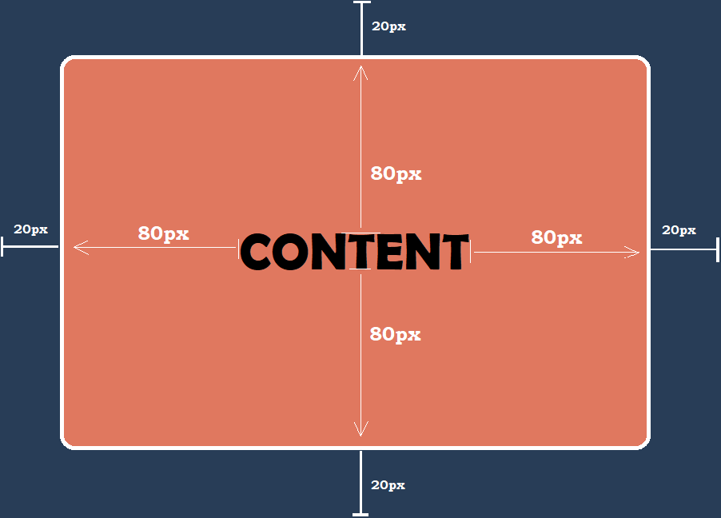
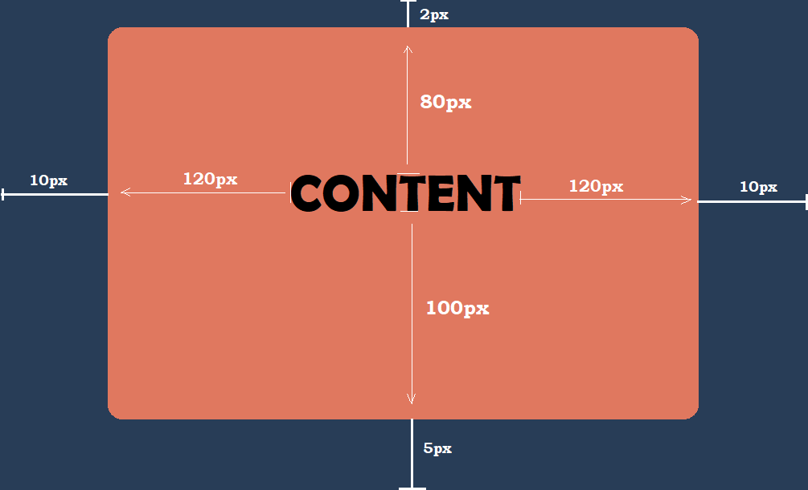

Padding: is the space between the content of a box and the its border.

Margin: is the space outside of the box, surrounding its border. It specifies the size of this space.
CSS Padding and Margin definition values

.example1{ padding:80px; }
One value is used when the same padding is applied to all four sides of the content.
.example2{ padding: 15px 10px ; }

Two values are used to define an equal value for both top and bottom padding (15px)- known as vertical padding- and another value that's the same for both right and left padding (10px)- known as horizontal padding.
.example3{ padding:80px 120px 100px; }
We use 3 values when left and right padding-horizontal padding- are equal and you want to define the padding in all 4 sides.
.example4{ padding:80px 100px 120px 140px; }

We use 4 values when we want to define a different padding for all 4 sides.
Purpose & Common use
Padding ensures that the content of the object doesn't touch the edges that covers it (i.e. its borders)
Margin ensures that the object is not being interfered or affected by the other objects that surround it.
Interaction next to other elements: Collapsation
Element's Padding and horizontal Margins (left and right margins) DO NOT COLLAPSE, but VERTICAL MARGINS-top and bottom margins- DO COLLAPSE.
It is an phenomenon which occurs when the top or bottom margin of one element comes into contact with the top or bottom margin of another element. Only vertical margins collapse, horizontal margins do not. In collapsing of two margins, the distance between the two boxes will use whichever margin value is greater. Margin collapsing also happens when an element is nested inside another element. Irrespective of contact of elements, even an element inside of another element will margin collapse with its parent if the two margins come into contact. Prevention of margin collapsing can be done by applying padding or a border to the either of the element.